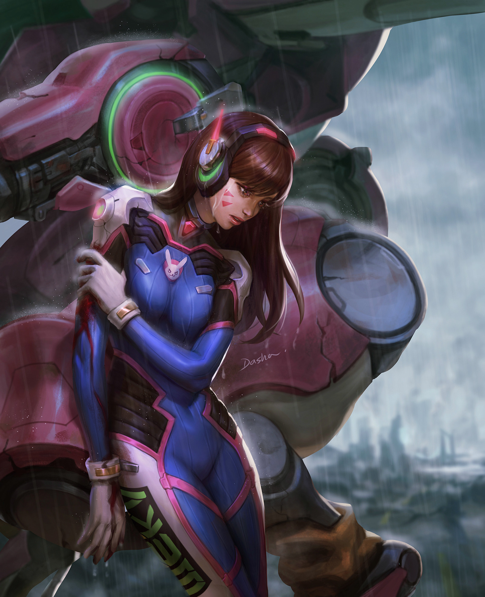

Fan art is artwork created by fans of a work of fiction and derived from a series character or other aspect of that work.
As fan labor, fan art refers to artworks that are neither created nor (normally) commissioned or endorsed by the creators of the work from which the fan art derives.
Fan Art Examples Criticism and Controversy Forms of Fan Art